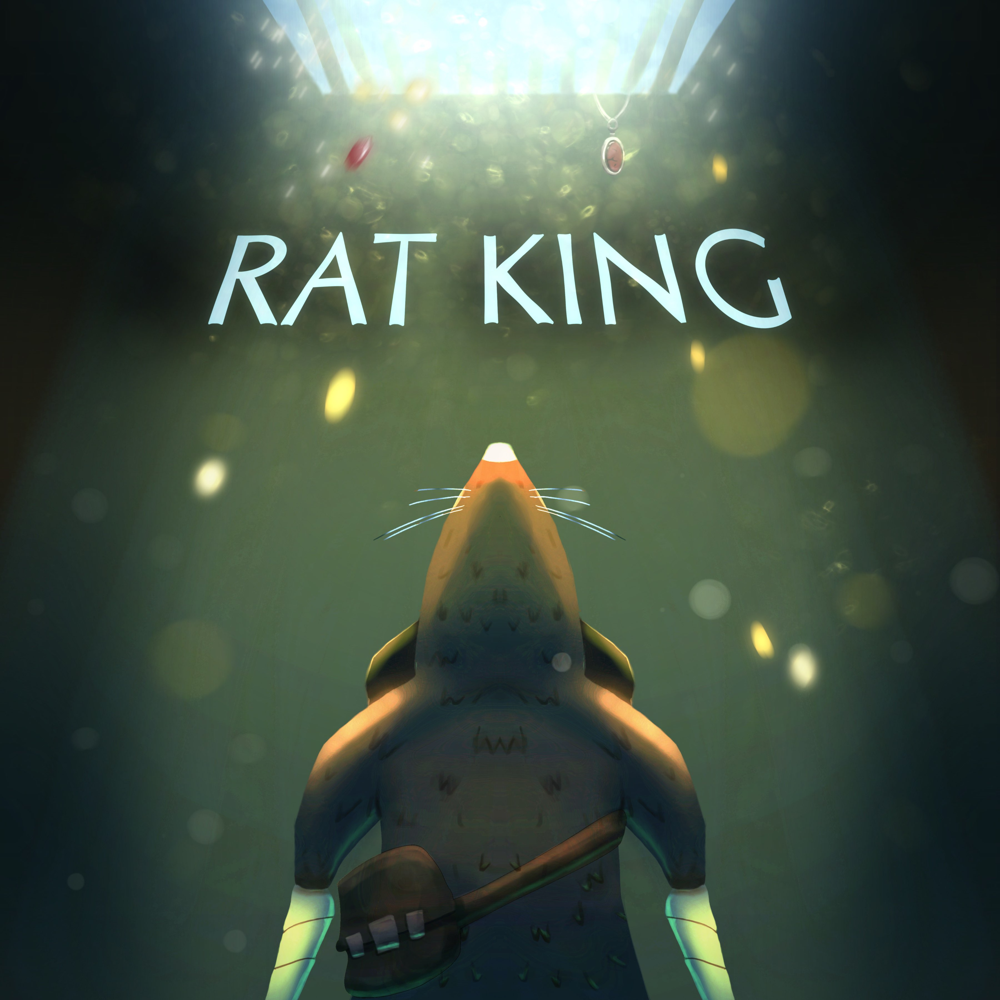

About Me
Passionate game programmer with hands-on experience since 2017. Started with backend web development in C#/ASP.NET, then transitioned fully into game programming to pursue systems-driven, creative development. I obtained my First Class Honours, with a dissertation focused on procedural stealth-level generation. I’m have recently completed my master’s thesis on optimizing surfel-based global illumination. My core interests lie in building gameplay systems, real-time graphics, and developer tools.
Chempunch
Unreal Engine
Dare Academy Finalist
Presented at EGX x MCM 2024 London
Chempunch on Itch.io
Notable Contributions
- Enemy horde AI utilizing behaviour trees, EQS, custom AI utility functions
- Congestion-aware pathfinding
- Controllable dynamic difficulty system
Chempunch is a first-person wave-defence action game in which I worked as generalist and AI programmer. Additionally, I helped with plugin integration (WWise) across multiple environments, conducted extensive profiling for performance and bug fixing and helped with git merges.
Game Engine / Render System / DX11
DX11
Computer Graphics & Procedural Programmer
Github

Notable Contributions
- Procedural Terrain (fBM)
- Procedural Destruction
- Procedural Gerstner Waves
- Compute Shader Buoyancy integrated with physics engine Bullet3D
- Screen-Space Reflections + DDA
- Parallel-Split Shadow Maps
This project simulates an immersive rocky ocean environment where the player pilots a ship capable of destroying procedural terrain. It combines work from three separate university modules, showcasing a range of computer graphics techniques. The implementation covers both foundational and intermediate graphics concepts,
Surfel Based Global Illumination
C++, DirectX 12 (DXR), HLSL, MiniEngine Solo Project Researcher & Graphics Programmer
Notable Contributions
- Surfel-Based GI pipeline in DX12
- Horizon-Based Indirect Lighting (HBIL) for robust near-field GI
- Confidence blending to merge surfel + screen-space lighting
- Near-Far Surfel Sphere (NFSS) - novel structure to reduce overspawning
- GPU profiling, debugging and performance evaluation in PIX
This project re-implements surfel-based GI (as used in Frostbite / GIBS) and introduces the Near-Far Surfel Sphere (NFSS), a hybrid data structure combining surfels with screen-space approximations. It reduces overspawning in dense geometry while maintaining lighting quality.
Toot The Lute
Unity, WWise
Feb 2025 To May 2025
7
Project Lead & Programmer
Toot the Lute on Itch.io
Notable Contributions
- Rhythm-based input system
- Rhythm-synced attacks, dashes and combos
- Beat track with approaching visual beat cues
- Dynamic input/audio and visual/audio latency calibration
Toot The Lute combines the isometric combat of Hades with the rhythm game system inspired by Bullets Per Minute (BPM). In creating this project I served as a team lead, leading a team of 2nd-year university game developers on their first game development project. Additionally, I also assumed the role of the project’s sole programmer and the responsibility of placing every created asset in the engine.
Ratking
Unity 7 Programmer

Notable Contributions
- Custom pathfinding and automatic PF graph builder
- Noise-based distraction/sensory system
- Fully physics simulated projectile trajectory preview
- Classic stealth game state machine
Ratking is a stealth-platformer game in which you play as a rat trying to infiltrate a mansion of cats. This was a professional project in my 3rd university year, which was in accordance to a extraction-game brief provided by Modern Wolf.